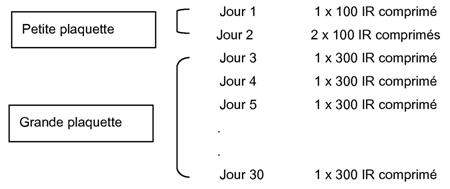

RÉSUMÉ DES CARACTÉRISTIQUES DU PRODUIT
ANSM - Mis à jour le : 14/03/2014
ORALAIR 300 IR, comprimés sublinguaux
Traitement d’entretien
2. COMPOSITION QUALITATIVE ET QUANTITATIVE
* IR (Indice de Réactivité) :
L'unité IR a été définie pour mesurer l'allergénicité d'un extrait allergénique. Un extrait allergénique titre
100 IR/mL lorsque, utilisé en prick-test à l'aide d'une lancette standardisée (Stallerpoint®), il provoque une papule d'un diamètre de 7 mm (moyenne géométrique) chez 30 sujets sensibilisés a cet allergène. La réactivité cutanée de ces sujets est simultanément démontrée par la positivité d'un prick-test au phosphate de codéine à 9 % ou d'histamine à 10 mg/mL. L’unité IR de Stallergenes n'est pas comparable aux unités utilisées par d'autres fabricants d'allergènes.
Excipient à effet notoire: lactose monohydraté
Un comprimé sublingual de 300 IR contient 81 ,8 à 83,1 mg de lactose monohydraté.
Pour la liste complète des excipients, voir rubrique 6.1.
Les comprimés de 300 IR sont légèrement tachetés blancs à beiges avec « 300 » gravé sur les deux faces.
4.1. Indications thérapeutiques
4.2. Posologie et mode d'administration
La première prise du comprimé ORALAIR doit être effectuée sous surveillance médicale pendant 30 minutes.
Posologie
La thérapie se compose d'un traitement d'initiation (incluant une augmentation progressive de la dose sur une durée de 3 jours) et d'un traitement d'entretien.
La boite d'ORALAIR destinée au traitement en phase d'initiation contient les médicaments pour le premier mois de traitement incluant des comprimés ORALAIR 100 IR et ORALAIR 300 IR en 2 plaquettes différentes :

La boîte d'ORALAIR destinée au traitement d'entretien ne contient que des comprimés ORALAIR 300 IR et sera utilisée à partir du 2e mois en poursuivant par un comprimé sublingual ORALAIR 300 IR par jour. Cette posologie sera maintenue jusqu'à la fin de la saison pollinique.
Le traitement doit être initié environ 4 mois avant le début estimé de la saison pollinique et poursuivi jusqu’à la fin de la saison pollinique.
Lorsqu'il n'y a pas d'amélioration significative des symptômes au cours de la première saison pollinique, la poursuite du traitement n'est pas justifiée.
En général, si le traitement est interrompu pour une durée inférieure à 7 jours, il pourra ensuite être poursuivi. En cas d’interruption du traitement pendant plus de 7 jours, il est recommandé de reprendre le traitement sous surveillance médicale.
Populations spécifiques
Il n'y a pas d'expérience clinique concernant l'immunothérapie spécifique par ORALAIR chez les patients âgés de plus de 50 ans.
Population pédiatrique
La sécurité et l’efficacité d’ORALAIR chez les enfants âgés de moins de 5 ans n’ont pas été établies.
Aucune donnée n’est disponible concernant le traitement avec ORALAIR chez les enfants au-delà d’une saison pollinique.
La posologie chez les adolescents et les enfants à partir de 5 ans est la même que chez les adultes.
Mode d’administration
Le comprimé sublingual doit être placé sous la langue jusqu'à sa dissolution complète (pendant au moins 1 minute) avant d'avaler.
Il est recommandé de prendre le comprimé pendant la journée lorsque la bouche est vide.
· Hypersensibilité (allergie) à l'un des excipients mentionnés à la rubrique 6.1;
· Traitement simultané par bêtabloquants ;
· Asthme sévère et/ou instable (VEMS < 70 % de la valeur théorique) ;
· Déficit immunitaire sévère ou maladie auto-immune;
· Affections malignes (telles que cancer) ;
· Inflammations de la muqueuse buccale (notamment lichen plan, ulcération ou mycose).
4.4. Mises en garde spéciales et précautions d'emploi
Ce médicament contient du lactose. Son utilisation est déconseillée chez les patients présentant une intolérance au galactose, un déficit en lactase de Lapp ou un syndrome de malabsorption du glucose ou du galactose (maladies héréditaires rares).
4.5. Interactions avec d'autres médicaments et autres formes d'interactions
Aucune donnée n'est disponible sur les risques éventuels de l'association d'une immunothérapie avec d'autres allergènes administrée au cours du traitement par ORALAIR.
En cas de réactions allergiques sévères, l'utilisation d'adrénaline peut être nécessaire.
Les effets de l'adrénaline peuvent être potentialisés jusqu'à mettre en jeu le pronostic vital chez les patients traités par des anti-dépresseurs tricycliques ou par les inhibiteurs de la monoamine oxydase (IMAO).
Aucune donnée clinique n'est disponible concernant la vaccination au cours d'une immunothérapie spécifique par ORALAIR. La vaccination pourra être envisagée sans interrompre le traitement par ORALAIR, seulement après un examen médical évaluant l'état général du patient.
Il n'existe pas de donnée clinique sur l’utilisation d’ORALAIR chez la femme enceinte.
Les études effectuées chez l’animal n’ont pas mis en évidence d’effets délétères directs ou indirects sur la reproduction (voir rubrique 5.3).
Par mesure de précaution, il est préférable d’éviter l’initiation d’une immunothérapie au cours de la grossesse. En cas de survenue de grossesse en cours de traitement, l’utilisation d’ORALAIR peut être poursuivie si nécessaire mais sous étroite surveillance.
Allaitement
L'excrétion de l’extrait allergénique de pollens de 5 graminées dans le lait maternel n’est pas connue.
Par mesure de précaution, il est préférable d’éviter l’initiation d’une immunothérapie au cours de l’allaitement.
Cependant, dans la mesure où l’exposition systémique à la substance active d’ORALAIR de la femme qui allaite est négligeable, l’utilisation d’ORALAIR peut être envisagée pendant l’allaitement en tenant compte du bénéfice du traitement pour la mère et du bénéfice de l’allaitement pour l’enfant.
Fertilité
Il n’existe pas de données chez l’homme concernant l’effet d'ORALAIR sur la fertilité.
Aucune étude sur la fertilité n’a été effectuée chez l’animal avec la substance active d’ORALAIR. L’examen histopathologique des organes reproducteurs mâles et femelles au cours des études de toxicité dose répétée avec l’extrait allergénique de pollens de 5 graminées n’a cependant pas révélé d'effet délétère.
4.7. Effets sur l'aptitude à conduire des véhicules et à utiliser des machines
Des réactions au site d'application (telles que prurit oral et irritation de la gorge) sont donc possibles au cours du traitement. En cas de réaction au site d'application, un traitement symptomatique (par exemple avec des antihistaminiques) peut être envisagé.
Comme dans toute immunothérapie allergénique, des réactions allergiques sévères, comprenant des troubles laryngo-pharyngés sévères ou des réactions allergiques systémiques (telle que affection cutanée ou muqueuse d'apparition soudaine, détresse respiratoire, symptômes gastro-intestinaux persistants, ou diminution de la pression artérielle et/ou symptômes associés) peuvent survenir. Les patients doivent être informés des signes et symptômes associés, de la nécessité de prendre un avis médical et d’interrompre le traitement si de telles réactions se produisent. Le traitement ne doit être repris que sur avis médical.
Etudes cliniques
Dans le cadre d'essais cliniques contrôlés contre placebo, 1 038 adultes et 154 enfants atteints de rhinoconjonctivite allergique aux pollens de graminées ont été traités par ORALAIR 300 IR une fois par jour. Les effets indésirables rapportés chez ces patients sont résumés dans le tableau ci-dessous.
La majorité des effets indésirables ayant conduit à une sortie prématurée de l'étude consistaient en des réactions au site d'application. Celles-ci étaient d'intensité légère ou modérée et sans gravité.
Adultes
Tableau récapitulatif des effets indésirables liés au médicament par système d’organe et fréquence de survenue [Très fréquent (≥ 1/10), fréquent (≥ 1/100, < 1/10), peu fréquent (≥ 1/1000, < 1/100), rare (≥1/10 000, <1/1000)]. Dans chaque catégorie de fréquence, les réactions graves sont présentées en premier.
|
Système d'organe/Fréquence/Effets indésirables |
||
|
Infections et infestations |
||
|
|
Fréquent |
Rhinopharyngite, rhinite |
|
|
Peu fréquent |
Herpès buccal, otite |
|
Troubles hématologiques et du système lymphatique |
||
|
|
Peu fréquent |
Lymphadénopathie |
|
Troubles du système immunitaire |
||
|
|
Peu fréquent |
Hypersensibilité, réaction allergique orale |
|
Troubles psychiatriques |
||
|
|
Peu fréquent |
Dépression |
|
Troubles du système nerveux |
||
|
|
Très fréquent |
Céphalée |
|
|
Peu fréquent Rare |
Dysgueusie, somnolence, sensation de vertige Anxiété |
|
Troubles oculaires |
||
|
|
Fréquent |
Prurit oculaire, conjonctivite, augmentation de la sécrétion lacrymale |
|
|
Peu fréquent |
Rougeur oculaire, œdème oculaire, sécheresse oculaire |
|
Troubles de l'oreille et du labyrinthe |
||
|
|
Fréquent |
Prurit de l'oreille |
|
|
Peu fréquent |
Gêne au niveau de l'oreille |
|
Troubles vasculaires |
||
|
Rare Bouffée vasomotrice |
||
|
Troubles respiratoires, thoraciques et médiastinaux |
||
|
|
Très fréquent |
Irritation de la gorge |
|
|
Fréquent |
Asthme, rhinite allergique (congestion nasale, éternuement, rhinorrhée, gêne nasale), toux, douleur oropharyngée, œdème pharyngé, congestion des sinus, dyspnée, dysphonie, sécheresse de la gorge, formation de vésicules oropharyngées, gêne oropharyngée |
|
|
Peu fréquent |
Hypoesthésie pharyngée, sensation de gorge serrée, sibilances, œdème laryngé |
|
Troubles gastro-intestinaux |
||
|
|
Très fréquent |
Prurit oral |
|
|
Fréquent |
Douleur abdominale, diarrhée, vomissement, œdème buccal, prurit de la langue, œdème labial, paresthésie orale, dyspepsie, œdème de la langue, hypoesthésie orale, stomatite, prurit labial, gêne buccale, nausée, glossodynie, sécheresse buccale, dysphagie |
|
|
Peu fréquent |
Douleur buccale, gingivite, chéilite, gastrite, glossite, augmentation de la taille des glandes salivaires, reflux gastro-œsophagien, affection de la langue, hypersalivation, ulcération de la bouche, douleur œsophagienne, œdème palatin, affection buccale, odynophagie, éructation |
|
Troubles cutanés et du tissu sous-cutané |
||
|
|
Fréquent |
Urticaire, prurit, dermatite atopique |
|
|
Peu fréquent Rare |
Angioœdème, rash, acné Œdème de la face |
|
Troubles généraux et anomalies au site d'administration |
||
|
|
Fréquent |
Gêne thoracique |
|
|
Peu fréquent |
Sensation de boule dans la gorge, asthénie, syndrome grippal |
|
Investigations |
|
|
|
|
Rare |
Augmentation du taux des polynucléaires éosinophiles |
|
Lésions, intoxications et complications liées aux administrations |
||
|
|
Peu fréquent |
Excoriation |
Dans un essai clinique incluant des adultes traités par ORALAIR durant trois saisons polliniques consécutives, les effets indésirables rapportés étaient moins fréquents au cours des deuxième et troisième périodes de traitement que pendant la première année de traitement.
Population pédiatrique
Le profil de sécurité dans la population pédiatrique est comparable à celui de l’adulte. Les effets indésirables suivants, listés dans le tableau récapitulatif, ont été rapportés plus fréquemment chez l’enfant que chez l'adulte : toux, rhinopharyngite, œdème buccal (très fréquent), syndrome d'allergie orale, chéilite, glossite, sensation de boule dans la gorge, gêne au niveau de l'oreille (fréquent).
D’autres effets indésirables ont été rapportés uniquement chez les enfants et les adolescents : angine, bronchite (fréquent), douleur thoracique (peu fréquent).
Effets indésirables rapportés depuis la commercialisation
Depuis la commercialisation, exacerbation d'asthme et réactions allergiques systémiques ont été rapportés chez l'adulte, l’adolescent et l'enfant avec une fréquence indéterminée (la fréquence ne peut pas être estimée à partir des données disponibles):.
Déclaration des effets indésirables suspectés
La déclaration des effets indésirables suspectés après autorisation du médicament est importante. Elle permet une surveillance continue du rapport bénéfice/risque du médicament. Les professionnels de santé déclarent tout effet indésirable suspecté via le système national de déclaration: Agence nationale de sécurité du médicament et des produits de santé (ansm) et réseau des Centres Régionaux de Pharmacovigilance. Site internet : www.ansm.sante.fr
Aucun cas de surdosage n'a été rapporté.
Le risque d'effets indésirables, incluant réactions systémiques ou locales sévères, augmente si la dose journalière administrée est supérieure à celle qui est recommandée. En cas de symptômes annonçant une réaction sévère tels que: angio-oedème, difficultés de déglutition, dyspnée, dysphonie ou sensation de gonflement dans la gorge, un avis médical immédiat est requis.
En cas de surdosage, le traitement des effets indésirables est symptomatique.
5. PROPRIETES PHARMACOLOGIQUES
5.1. Propriétés pharmacodynamiques
Classe pharmacothérapeutique : Extraits allergéniques, pollen de graminées, code ATC : V01 AA02
Mécanisme d'action :
ORALAIR est utilisé pour traiter des patients ayant des symptômes d'allergie médiée par des IgE spécifiques tels qu'une rhinite et/ou une conjonctivite provoquée par les pollens de graminées.
Le système immunitaire est la cible de l'effet pharmacodynamique. L'objectif est d'induire une réponse immunitaire contre l'allergène avec lequel est traité le patient. Le mode d'action complet et exact de l'immunothérapie spécifique n'est pas entièrement connu et documenté. Le traitement par ORALAIR a montré qu'il induit une réponse systémique compétitive des anticorps anti-graminées et une augmentation des IgG spécifiques. La signification clinique de ces résultats n'a pas été établie.
Efficacité clinique (étude V034.04) :
Une étude européenne multicentrique multinationale, randomisée, en double aveugle et contrôlée contre placebo a été menée. L'étude a inclus 628 adultes présentant une rhinite et/ou rhinoconjonctivite allergique saisonnière aux pollens de graminées, confirmée par des tests cutanés et/ou la présence d'IgE spécifiques aux pollens de graminées.
Les patients ont été randomisés dans 4 groupes: placebo (n = 156), ORALAIR 100 IR/jour (n = 157), ORALAIR 300 IR/jour (n = 155) et ORALAIR 500 IR/jour (n = 160).
Chaque patient a reçu une dose sublinguale, quotidienne, pendant environ 4 mois avant le début de la saison pollinique et pendant toute une saison pollinique. L'analyse des résultats était basée sur 569 patients évaluables (placebo: n = 148; ORALAIR 100 IR: n = 142 ; ORALAIR 300 IR : n = 136; ORALAIR 500 IR: n = 143). L'efficacité a été déterminée en fonction du score total de symptômes de rhinoconjonctivite (voir détail du score plus bas) durant cette saison pollinique unique.
Les résultats de cette étude ont montré une efficacité comparable des doses 500 IR et 300 IR, avec des données de sécurité en faveur de la dose 300 IR, établissant ainsi la posologie préconisée à 300 IR par jour.
Les résultats concernant l'efficacité de la dose 300 IR par rapport au groupe placebo (le nombre de sujets inclus dans la population en Intention de Traiter (ITT) était de 136 pour ORALAIR et 148 pour le placebo) ont été les suivants:
Étude V034.04 : résultats sur les critères d'efficacité (au cours d'une seule saison pollinique)
Critère de jugement principal :
|
Etude VO34.04 |
ORALAIR 300IR |
Placebo |
Diff. absolue ajustée |
Diff. relative moyenne* |
Valeur de p** |
|
|
Médiane |
Médiane |
|
% |
|
|
Score des symptômes de rhinoconjonctiviteA |
3,58 (2,98) |
4,93 (3,23) |
-1,39 [-2,09; -0,69] |
27,3% |
0,0001 |
* Différence relative moyenne: Différence absolue / Placebo
** ANCOVA
A Score des symptômes: Moyenne des scores totaux de symptômes de rhinoconjonctivite quotidiens pour chaque patient au cours de la saison pollinique. Les symptômes de rhinoconjonctivite incluaient éternuements, rhinorrhée, prurit nasal, congestion nasale, larmoiement et prurit oculaire (échelle du score: 0 à 18, la valeur la plus élevée de 18 correspond au niveau de présence permanent très sévère pour les six symptômes).
Critères de jugement secondaires :
Étude VO34.04 |
ORALAIR 300IR Moyenne (DS) |
Placebo Moyenne (DS) |
Diff. absolue ajustée moyenne [IC 95%] |
Diff. relative moyenne* |
Valeur de p** |
|
Médiane |
Médiane |
% |
|||
|
Utilisation de médicaments symptomatiques de secours B |
19,7% (24,8) 10.6% |
27,9 % (29,3) 19,7% |
- |
- |
- |
|
Score qualité de vie C |
1,08 (0,96) 0,89 |
1,37 (1,01) 1,20 |
-0,25 [-0,47 ; -0,04] |
21,1% |
<0,0199 |
* Différence relative moyenne: Différence absolue / Placebo
** ANCOVA
B Utilisation de médicaments symptomatiques de secours: pourcentage de jours par patient avec au moins une prise d'un médicament de secours, valeur de p 0,0194 NS (test de Wilcoxon).
C Qualité de vie évaluée au moment du pic pollinique à l'aide du questionnaire Qualité de vie de la
rhinoconjonctivite (RQLQ) (échelle de scores de 0 à 7, la valeur la plus élevée du score reflète la qualité de vie la plus mauvaise).
Evaluation globale de l'efficacité du traitement par le patient: 119/135 patients (88%) du groupe ORALAIR 300 IR et 108/147 patients (73%) du groupe placebo ont noté une amélioration légère à modérée ou bonne à excellente par rapport à leurs souvenirs de la saison pollinique précédente.
Les résultats de l'analyse ANCOVA des scores moyens pour chacun des six symptômes individuels de rhinoconjonctivite, cotés de 0 à 3, ont montré une différence en faveur des comprimés 300 IR comparés au placebo pour les éternuements (-0,19), rhinorrhée (-0,23), prurit nasal (-0,23), congestion nasale (-0,28), prurit oculaire (-0,24) et larmoiement (-0,21).
La proportion de patients n'utilisant pas de médicaments de secours était de 35,3% dans le groupe 300 IR et de 27,0% dans le groupe placebo (NS).
Analyses post-hoc (réalisées après la levée du double aveugle) :
|
Etude VO34.04 |
ORALAIR 300IR |
Placebo |
Diff. absolue ajustée moyenne [IC 95%] |
Diff. relative moyenne* |
Valeur de p |
|
|
Médiane |
Médiane |
|
% |
|
|
Score moyen ajusté des symptômesD |
4,17 (3,39) |
5,88 (3,82) |
-1,84 [-2,66; -1,02] |
29,1% |
<0,0001** |
|
Score moyen de médicaments symptomatiques de secours E |
0,31 (0,43) |
0,48 (0,53) |
-0,17 [-0,29; -0,05] |
35,0% |
0,0047** |
|
PSCD2-0F |
43,5% (33,8) |
28,7% (30,7) |
- |
- |
0,0001*** |
|
PSFD G |
25,3% (30,2) |
14,9% (23,6) |
- |
- |
0,0006*** |
* Différence relative moyenne: Différence absolue / Placebo
** ANCOVA
*** test de Wilcoxon
D Score moyen ajusté des symptômes (AASS) : score moyen des symptômes quotidiens, ajusté en fonction de la consommation de médicaments (pour chaque patient, utilisant les scores quotidiens des symptômes et le score quotidien d'utilisation des médicaments symptomatiques de secours).
E Score moyen de médicaments symptomatiques de secours : moyenne des scores quotidiens de
médicaments symptomatiques de secours consommés pour chaque patient au cours de la saison pollinique. La consommation de médicaments a été pondérée comme suit : pas de médicaments symptomatiques de secours = 0, antihistamines (oral et/ou oculaire) = 1, corticostéroïdes nasaux = 2 et corticostéroïdes oraux = 3.
F Pourcentage des jours avec symptômes contrôlés (PSCD2-0) : pourcentage des jours avec un score des symptômes inférieur ou égal à 2 et sans médicament symptomatique de secours.
G Proportion des jours sans symptôme et sans médicament de secours (PSFD) : pourcentage des jours sans symptôme et sans prise de médicament symptomatique de secours.
Soixante et un patients (45%) du groupe 300 IR ont présenté plus de 50% de jours avec contrôle des symptômes (score des symptômes inférieur ou égal à 2 et pas de prise de médicaments symptomatiques de secours) sur l'ensemble de la saison pollinique, contre 40 patients (27%) dans le groupe Placebo.
Population pédiatrique
Une étude européenne multicentrique multinationale, randomisée, en double aveugle et contrôlée contre placebo a été menée.
L'étude incluait 278 patients âgés de 5 à 17 ans présentant une rhinite et/ou une rhinoconjonctivite allergique saisonnière aux pollens de graminées, confirmée par des tests cutanés et/ou la présence d'IgE spécifiques aux pollens de graminées.
Les patients ont été randomisés en 2 groupes: placebo (n = 139) ou ORALAIR 300 IR/jour (n = 139). Chaque patient a reçu une dose sublinguale, quotidienne, pendant environ 4 mois avant le début de la saison pollinique ainsi que pendant toute une saison pollinique. Un schéma posologique croissant a été suivi pendant les 3 premiers jours du traitement, partant d'une dose initiale de 100 IR le premier jour, puis une dose de 200 IR le 2ème jour puis 300 IR au troisième jour. L'analyse des résultats est basée sur 266 patients évaluables (placebo, n = 135; Oralair 300 IR, n = 131). L'efficacité a été déterminée en fonction du score total de symptômes de rhinoconjonctivite (voir détails du score plus bas) durant cette saison pollinique unique.
Les résultats concernant l'efficacité de la dose 300 IR par rapport au groupe placebo (le nombre de sujets inclus dans la population en Intention de Traiter (ITT) était respectivement de 131 pour ORALAIR et 135 pour le placebo) ont été les suivants:
Étude V052.06 : résultats obtenus sur les critères d'efficacité (au cours d'une seule saison pollinique) :
Critère de jugement principal:
|
Etude VO52.06 |
ORALAIR 300IR |
Placebo |
Diff. absolue ajustée |
Diff. relative |
Valeur de p** |
|
Score des symptômes de rhinoconjonctivite A |
3,25 (2,86) |
4,51 (2,93) |
-1,13 [-1,80; -0,46] |
28,0% |
0,001 |
* Différence relative moyenne: Différence absolue / Placebo
** ANCOVA
A Score des symptômes : Moyenne des scores totaux de symptômes de rhinoconjonctivite quotidiens pour chaque patient au cours de la saison pollinique. Les symptômes de rhinoconjonctivite incluaient éternuements, rhinorrhée, prurit nasal, congestion nasale, larmoiement et prurit oculaire (échelle du score : 0 à 18, la valeur la plus élevée de 18 correspond au niveau de présence permanent très sévère pour les 6 symptômes).
Critères de jugement secondaires :
|
Etude VO52.06 |
ORALAIR 300IR |
Placebo |
Diff. absolue ajustée |
Diff. relative |
Valeur de p** |
|
Score moyen ajusté de médicaments symptomatiques de secours B |
0,60 (0,61) |
0,79 (0,65) |
-0,20 [-0,34; -0,06] |
24,1% |
0,0064 |
|
Utilisation de médicaments symptomatiques de secours C |
35,4% (33,2) |
46,5% (34,6) |
- |
- |
- |
* Différence relative moyenne: Différence absolue / Placebo
** ANCOVA
B Score moyen de médicaments symptomatiques de secours : moyenne des scores quotidiens de médicaments symptomatiques de secours consommés pour chaque patient au cours de la saison pollinique. La consommation de médicaments a été pondérée comme suit : pas de médicaments symptomatiques de secours = 0, antihistamines (oral et/ou oculaire) = 1, corticostéroïdes nasaux = 2 et corticostéroïdes oraux = 3.
C Utilisation de médicaments symptomatiques de secours : pourcentage de jours par patients avec au moins une prise d'un médicament symptomatique de secours, valeur de p 0,0194 NS (test de Wilcoxon).
Scores des symptômes individuels : les résultats de l'analyse ANCOVA des scores moyens pour chacun des six symptômes individuels de rhinoconjonctivite, cotés de 0 à 3, ont montré une différence en faveur des comprimés 300 IR comparés au placebo pour la rhinorrhée (-0,16), la congestion nasale (-0,26), le prurit oculaire (-0,33) et le larmoiement (-0,21).
La proportion de patients n'utilisant pas de médicaments symptomatiques de secours était de 18,3% dans le groupe 300 IR et 14,8% dans le groupe placebo (NS).
Analyses post-hoc (réalisées après la levée du double aveugle) :
|
Etude VO52.06 |
ORALAIR 300IR |
Placebo |
Diff. absolue ajustée |
Diff. relative |
Valeur de p |
|
Score moyen ajusté des symptômes D |
4,30 (3,57) |
6,12 (3,85) |
-1,64 [-2,51; -0,78] |
29,8% |
0,0002** |
|
PSCD2-0 E |
33.8% (30,0) |
23,7% (27,2) |
- |
- |
0,0107*** |
|
PSFD F |
19,2% (24,9) |
10,5% (18,4) |
- |
- |
0,0037*** |
* Différence relative moyenne: Différence absolue / Placebo
** ANCOVA
*** Test de Wilcoxon
D Score moyen ajusté des symptômes (AASS) : score moyen des symptômes quotidiens, ajusté en fonction de la consommation de médicaments (pour chaque patient, en utilisant les scores quotidiens des symptômes et le score quotidien d'utilisation des médicaments symptomatiques de secours).
E Pourcentage des jours avec symptômes contrôlés (PSCD2-0) : pourcentage des jours avec un score des symptômes inférieur ou égal à 2 et sans médicament symptomatique de secours.
F Proportion des jours sans symptôme et sans médicament de secours (PSFD) : pourcentage des jours sans symptôme et sans prise de médicament symptomatique de secours.
Quarante-quatre patients (34%) du groupe 300 IR ont présenté plus de 50% de jours avec contrôle des symptômes (score des symptômes inférieur ou égal à 2 et pas de prise de médicament symptomatique de secours) sur l'ensemble de la saison pollinique, contre 26 patients (19%) dans le groupe placebo.
5.2. Propriétés pharmacocinétiques
5.3. Données de sécurité préclinique
Dans une étude de toxicité chez le rat juvénile, une posologie journalière administrée pendant 10 semaines à la dose la plus élevée (correspondant à 300 fois la dose thérapeutique chez l'homme) a été associée à un temps de thromboplastine partielle activée (TTPA) significativement raccourci chez le mâle uniquement, sans qu'aucun signe clinique ni anomalie histologique n'ait été observé.
Cellulose microcristalline ;
Croscarmellose sodique ;
Silice colloïdale anhydre ;
Stéarate de magnésium ;
Lactose monohydraté.
6.4. Précautions particulières de conservation
Pas de précautions particulières de conservation concernant la température.
A conserver dans l’emballage extérieur d’origine à l’abri de l’humidité. Ne pas congeler.
6.5. Nature et contenu de l'emballage extérieur
1 x 30 comprimés sublinguaux de 300 IR dans une plaquette thermoformée (alu/alu) composée d'un film (polyamide/aluminium/chlorure de polyvinyle) d'un côté et d'une feuille scellée à chaud (aluminium) recouverte d'un vernis (vinyle) sur l'autre face. Boîte de 1 ou de 3.
Toutes les présentations peuvent ne pas être commercialisées.
6.6. Précautions particulières d’élimination et de manipulation
Pas d’exigences particulières.
7. TITULAIRE DE L’AUTORISATION DE MISE SUR LE MARCHE
6 rue Alexis de Tocqueville
92160 ANTONY
8. NUMERO(S) D’AUTORISATION DE MISE SUR LE MARCHE
· 368 953-9 ou 34009 368 953 9 3 : 1 plaquette thermoformée (Alu/Alu) de 30 comprimés sublinguaux de 300 IR ; Boîte de 3.
9. DATE DE PREMIERE AUTORISATION/DE RENOUVELLEMENT DE L’AUTORISATION
[à compléter par le titulaire]
10. DATE DE MISE A JOUR DU TEXTE
[à compléter par le titulaire]
12. INSTRUCTIONS POUR LA PREPARATION DES RADIOPHARMACEUTIQUES
Liste I.